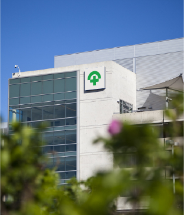

Awal berdirinya Rumah Sakit Bunda Sejati dimulai pada tahun 1983, sebagai (BPM ) Sepuluh tahun kemudian di tahun 1993, berkembang menjadi Rumah Bersalin dengan kapasitas yang cukup banyak
dari tahun 1973 sampai 1977 pada Tanggal 27 maret, dr.rizal sini, sp.OG mendirikan rumah sakit bersanlin bunda, klinik bersalin khusus untuk layanan kesehatan yang memberikan "homey experince" bagi pasien Selama kehamilan dan persalinan.